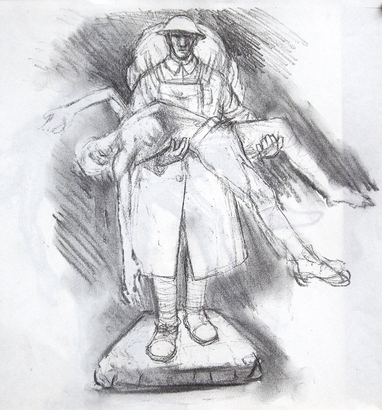
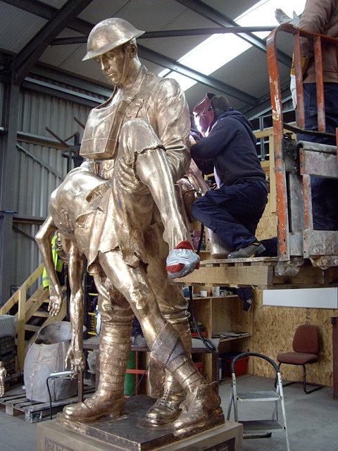
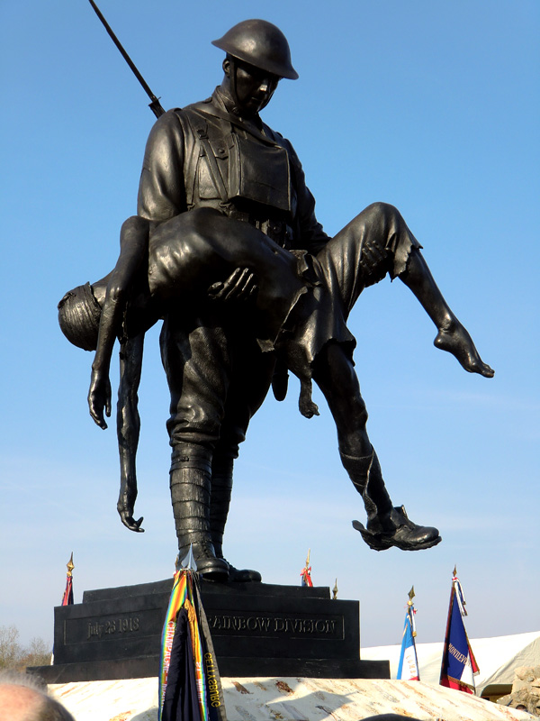

Places to See
Here are a list of points of interests to see.
 I first made a maquette some two feet high. This is where I worked out the relationship between the two figures – the way they would relate to each other and the general balance and mass of the composition. The Croix Rouge Memorial Foundation approved my model or maquette. I then had to begin construction of the full sized version. With some assistance, an armature or steel frame was constructed some five times the size of the maquette. This had to be strong and able to carry the weight of the clay, which is the medium I use to model the form. Clay is a wonderfully expressive material and faithfully records the movement of the sculptors hands. When the clay sculpture is finished the translation of the form into bronze begins.
 I first made a maquette some two feet high. This is where I worked out the relationship between the two figures – the way they would relate to each other and the general balance and mass of the composition. The Croix Rouge Memorial Foundation approved my model or maquette. I then had to begin construction of the full sized version. With some assistance, an armature or steel frame was constructed some five times the size of the maquette. This had to be strong and able to carry the weight of the clay, which is the medium I use to model the form. Clay is a wonderfully expressive material and faithfully records the movement of the sculptors hands. When the clay sculpture is finished the translation of the form into bronze begins.
 I first made a maquette some two feet high. This is where I worked out the relationship between the two figures – the way they would relate to each other and the general balance and mass of the composition. The Croix Rouge Memorial Foundation approved my model or maquette. I then had to begin construction of the full sized version. With some assistance, an armature or steel frame was constructed some five times the size of the maquette. This had to be strong and able to carry the weight of the clay, which is the medium I use to model the form. Clay is a wonderfully expressive material and faithfully records the movement of the sculptors hands. When the clay sculpture is finished the translation of the form into bronze begins.